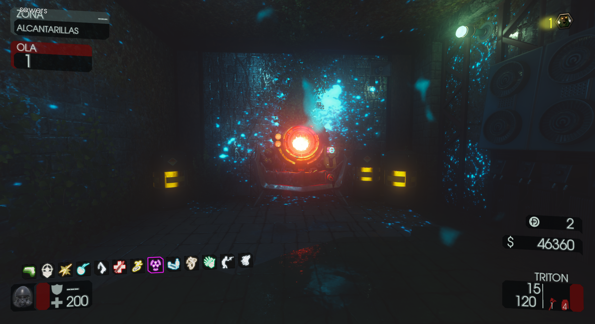

Requisitos:
Activar la electricidad.
Tendremos que ir al edificio de la refinería de Agua e interactuar con la palanca para redirigirla.
Después iremos a la zona de los puentes y podremos bajar los pilares por 1500 puntos.
Al final del lugar encontraremos el Pack-A-Punch.
